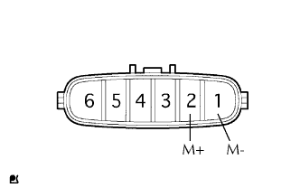
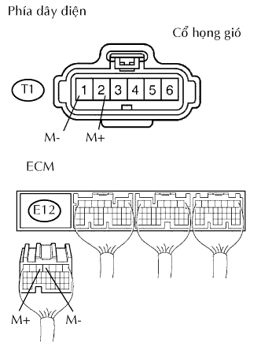

DTC P2102/41 Mạch Môtơ Điều Khiển Bộ Chấp Hành Bướm Ga - Tín Hiệu Thấp |
DTC P2103/41 Mạch Môtơ Điều Khiển Bộ Chấp Hành Bướm Ga - Tín Hiệu Cao |
| Số mã DTC | Điều kiện phát hiện DTC | Khu vực nghi ngờ |
| P2102/41 | Các điều kiện (a) và (b) liên tục trong 2.0 giây (thuật toán phát hiện 1 hành trình):
|
|
| P2103/41 | Một trong các điều kiện sau thỏa mãn (thuật toán phát hiện 1 hành trình):
|
|
| 1.KIỂM TRA CỤM CỔ HỌNG GIÓ (ĐIỆN TRỞ CỦA BỘ CHẤP HÀNH BƯỚM GA) |
|  |
Ngắt giắc nối T1 của cổ họng gió.
Đo điện trở giữa của bộ chấp hành bướm ga.
| Nối dụng cụ đo | Điều kiện | Điều kiện tiêu chuẩn |
| 2 (M+) - 1 (M-) | 20°C (68°F) | 0.3 đến 100 Ω |
|
| ||||
| OK | |
| 2.KIỂM TRA DÂY ĐIỆN (BỘ CHẤP HÀNH BƯỚM GA - ECM) |
|  |
Ngắt giắc nối T1 của cổ họng gió.
Ngắt giắc nối E12 của ECM.
Đo điện trở của các giắc nối phía dây điện.
| Nối dụng cụ đo | Điều kiện tiêu chuẩn |
| T1-2 (M+) - E12-5 (M+) | Dưới 1 Ω |
| T1-1 (M-) - E12-4 (M-) | Dưới 1 Ω |
| T1-2 (M+) hay E12-5 (M+) - Mát thân xe | 10 kΩ trở lên |
| T1-1 (M-) hay E12-4 (M-) - Mát thân xe | 10 kΩ trở lên |
|
| ||||
| OK | |
| 3.KIỂM TRA CỤM CỔ HỌNG GIÓ |
Kiểm tra bằng quan sát xem các vật lạ giữa bướm ga và thân cổ họng gió.
Tương tự, kiểm tra xem bướm ga mở và đóng trơn tru.
|
| ||||
| OK | ||
| ||